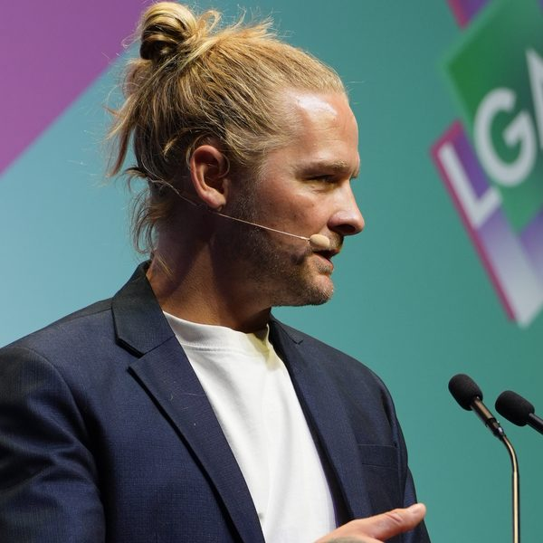
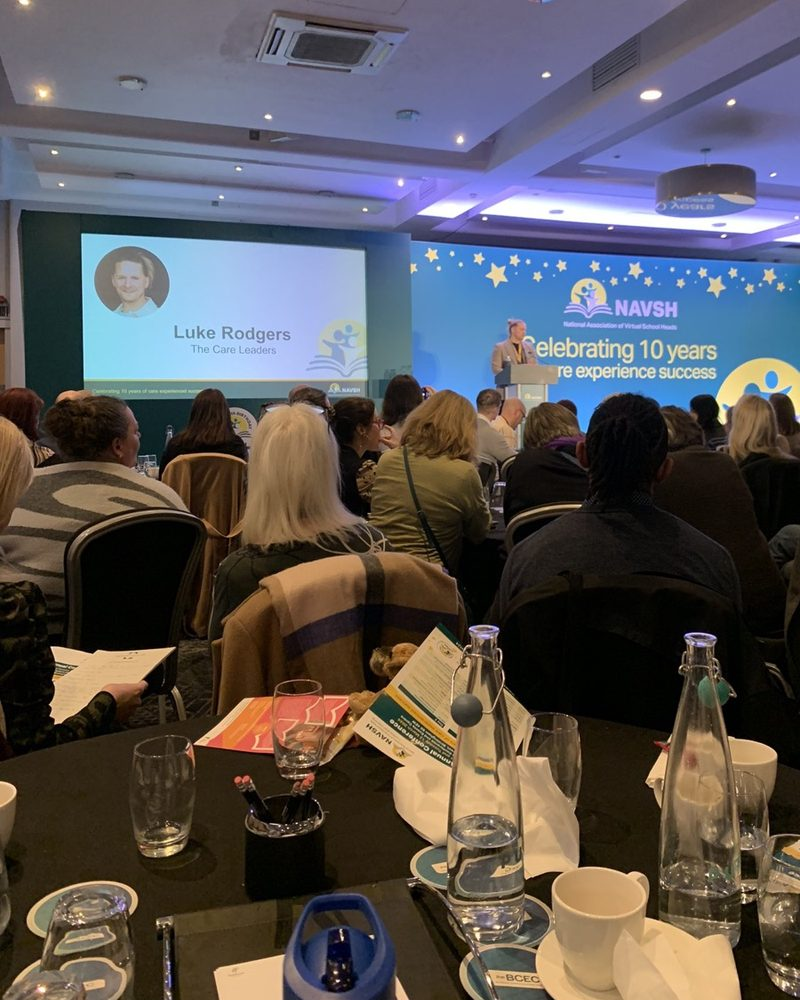
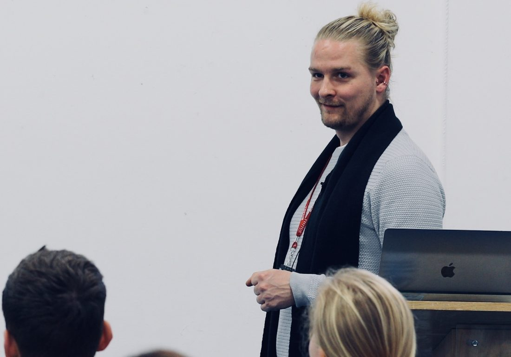

Keynotes and conference workshops with Luke Rodgers BEM
I went into care at 10. At 15 I was living in a B&B, and at 18 I was in a caravan. I gave my first keynote at 19, standing in front of a room of professionals and telling them what care had felt like from the inside. I’ve been doing it ever since, because it’s still one of the fastest ways I know to change how people see children in care.
That’s why I set up The Care Leaders: to go from care leaver to care leader, and to help others make the same move. Since then I’ve led the national engagement on England’s new fostering standards, been a Knowledge Equity Fellow at Saïd Business School, Oxford, and been awarded the British Empire Medal. Every talk brings together my story, the theory behind it and tools your audience can use the next day.



British Empire Medal
Awarded in 2018.
Knowledge Equity Fellow
Saïd Business School, University of Oxford.
National leadership
Engagement lead on England’s new fostering standards.
Spoken at
Community Care Live, the Local Government Association, NAVSH national conferences, and online to audiences in Australia.
On stage
From national conferences to staff days, in person and online.





Choose a talk
Every talk follows the same spine: my story, the theory behind it, and tools people can use straight away. Talks run from 45 to 90 minutes, in person or online.

Living a Careless Life
My flagship keynote. Story-led and upbeat, it shows what the adults who made a difference actually did, and gives people practical tools to take back to the children they work with.

Just Say Yes
Seeing the child behind the referral. What behaviour is really communicating, trauma and attachment in plain language, and simple tools that help carers say yes with understanding.

The Power of the Profile
One day, the child will read what you wrote. What it feels like to read your own records, and how to write honest, balanced and hopeful profiles that help other adults say yes.

Tools for Schools
How to read the messages in children’s behaviour and respond with the right tools: language and stigma, attachment and trauma, and where school and children’s social care clash.

Lived Experience Leadership
How professional leaders can work alongside people with lived experience, so they’re recognised as leaders and not only for their story.

From Care Leaver to Care Leader
Your story as a strength, not a setback. My journey from care to national leadership, and how adversity builds real leadership skills.

Be the First Yes
Care-experienced people are the biggest untapped potential in the UK. The barriers they face in jobs, education and homes, and how your organisation can be the first to say yes.

More than a keynote
Every booking, in person or online, comes with the same package, so the learning doesn’t stop when the session ends.
The keynote
Story-led, practical and built around your audience.
The recording, for 12 months
Every delegate can watch the full keynote again on The Care Leaders Online for 12 months after your event.
A workbook for every delegate
Built around Story, Theory and Action, with activities that help delegates take the learning back into their teams.
What people say
“Nothing was as transformative as hearing Luke speak about his life.”
“I have seen them in action at many conferences and have heard professionals report changes in their own behaviour.”
“You demand bravery and humanity in equal measure.”

How booking works
1. Tell us about your event
The booking form takes 2 minutes. Tell us the date, your audience and whether you’re after a keynote, a workshop or both.
2. Get availability and a fee
You’ll get an email with Luke’s availability, the fee and the talk we’d recommend for your audience. If Luke is free, we hold the date for 14 days.
3. Confirm by email
Reply to confirm and send a purchase order if your organisation uses them. Our booking terms come with the email.
4. Before the day
A short call to shape the talk around your audience, and a checklist of what Luke needs on the day.
For your information: keynotes and conference workshops are contracted and invoiced by Luke Speaks Ltd, powered by The Care Leaders.